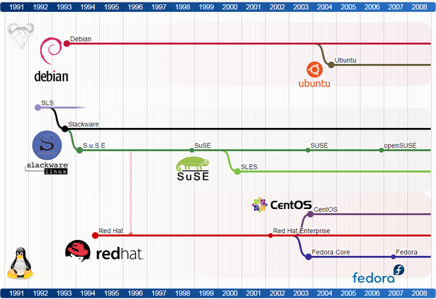

# Linux Learn the basics of the Linux operating system and how to manage it from the command line. This material is part of [web development courses](https://github.com/MediaComem/comem-webdev) for [Media Engineering](https://heig-vd.ch/formations/bachelor/filieres/ingenierie-des-medias). --- ## Unix history .breadcrumbs[<a href="#1">Linux</a>] <img src='images/unix-history.png' width='95%' /> --- ## Linux distribution timeline .breadcrumbs[<a href="#1">Linux</a>] <p class='center'></p> <p class='center'><a href='images/linux-distribution-timeline.svg'>Full timeline</a></p>